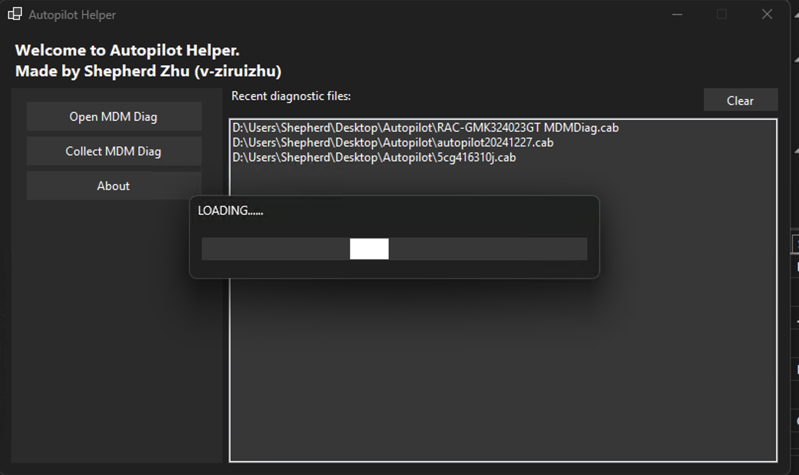
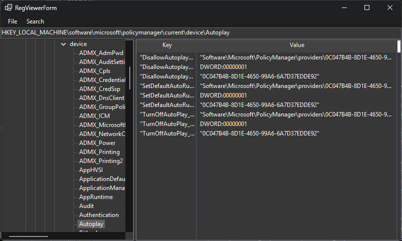
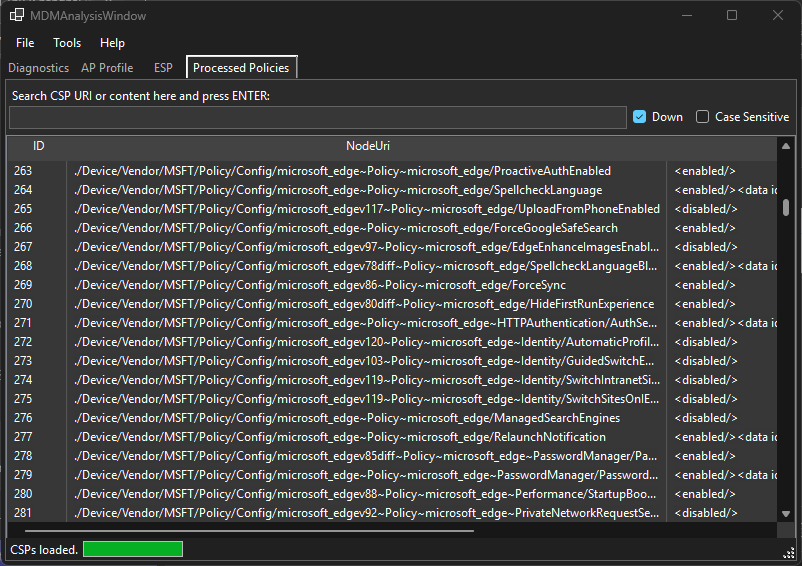
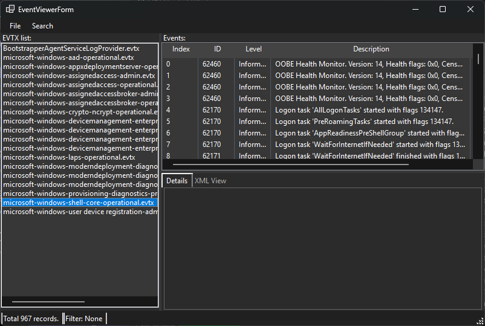

Welcome to Autopilot Helper documentation.
AutopilotHelper is a C#-based tool designed to provide an easy-to-use, graphical interface for MDM log analysis and Autopilot monitoring. It aims to streamline IT operations by offering a comprehensive solution that simplifies the process of managing and analyzing logs from multiple sources.
This documentation should be able to guide you through. If this is your first tour, you may starts with the Content section on the left, or you can use the search box.
Good luck and happy troubleshooting!
Project URL
https://github.com/Shepherd0619/IntunePremier
Screenshots
   
Disclaimer
This project is under BSD-3-Clause license. The documentation is provided for your own convenience when using Autopilot Helper. There is no warranty and use the tool at your own risk.